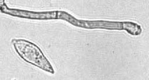

धान का झोंकाRice Blast Fungus
Magnaporthe oryzae · Magnaporthaceae · FNG-0017

- Scientific name
- Magnaporthe oryzae (T.T. Hebert) M.E. Barr
- Family
- Magnaporthaceae
- Hindi
- धान का झोंका
- Local names
- dhan ka jhonka, jhonka rog, blast rog, dhan ka blast
- Status here
- native
- IUCN
- not evaluated
- Review
- audited and independently read
When to look कब देखें
Expected mainly in June, July, August, September, October.
धान का झोंका / Rice Blast Fungus
Magnaporthe oryzae (T.T. Hebert) M.E. Barr — Magnaporthaceae
धान का झोंका — मानसून के बीच में, जून-जुलाई में, जब धान की पत्तियाँ तेज़ी से बढ़ती हैं और हवा उमस भरी रहती है, तब झोंका आता है। सूखी, भूरे-काले रंग के पत्ते जैसे घाव जो बीच में पीले हों। अगर बीमारी तना और बालियों तक पहुँच जाए, तो पूरी बाली काली पड़ जाती है, और दाने खाली हो जाते हैं। यह धान की सबसे खतरनाक बीमारी है। रोधक किस्में, सफ़ाई, और सही बीज इसका इलाज है।
Quick Identification त्वरित पहचान
| Feature | Description |
|---|---|
| Leaf lesion | Spindle-shaped or diamond-shaped lesions on rice leaves; tan or grey-brown centre with darker borders |
| Lesion size | 0.5–2 cm long; distinctive necrotic (dead) zone in the middle |
| Lesion margin | Dark brown or reddish-purple; sharply defined |
| Lesion centre | Ashy grey to tan; may show concentric rings of spore-bearing structures (conidia) visible as fine powder under magnification |
| Collar lesion | Often appears first on leaf collar (junction of leaf blade and sheath); coalesces to form large necrotic patches |
| Panicle symptom | Bleached (whitened) or black panicles; grains shrivelled and empty; infection at panicle base (neck blast) causes entire panicle to droop |
| Stem infection | Brown to black discolouration at the base of tillers and nodes |
| Symptom severity | Can kill entire shoot if fungus enters nodes; premature ripening and grain death |
Field tip: Walk through a rice field in August–September during the monsoon. Look at leaf lesions: if they are spindle-shaped with a grey centre and dark margin, that is blast. The disease starts on lower leaves and moves upward. If the panicle looks bleached or black, that is neck blast — a sign of serious infection and impending crop loss.
हिंदी — कैसे पहचानें: धान की पत्ती पर काले-भूरे, तकिए जैसे घाव, बीच में सफ़ेद। बाली काली या सफ़ेद — दाने खाली हों। जुलाई-अगस्त में।
Morphology and Symptomatology आकृति और लक्षण
Fungal structures (microscopic):
| Structure | Appearance |
|---|---|
| Conidium (spore) | Pyriform (pear-shaped), 2–3 celled, 18–28 × 10–13 µm; colourless; released from conidiophores in moist conditions |
| Appressorium | Specialised fungal cell that penetrates the leaf cuticle; dark brown, roughly spherical; forms under dry conditions to maintain turgor |
| Perithecia | Sexual structures (fruiting bodies); found in overwintering rice straw; rare in India |
Disease progression:
- Infection to symptom: 5–7 days (under optimal conditions: 25–28°C, 95%+ humidity, continuous leaf wetness)
- Sporulation: Once lesions mature, conidiophores erupt from lesion centres, producing fresh conidia visible as a grey-brown spore mass
- Secondary spread: Each lesion can release millions of spores; wind-dispersed to healthy leaves; epidemic develops exponentially
Life Cycle / Phenology जीवन चक्र
In eastern UP (monsoon rice: June–October):
| Stage / Month | Event | Notes |
|---|---|---|
| May (seed treatment) | Infected seed planted or soil inoculum dormant in rice stubble | Primary inoculum from residue of previous rice crop or infected seed |
| June (transplanting) | Rice seedlings transplanted into paddies; high humidity in nursery; blast may occur in nursery if conditions wet and cool | Nursery blast is a serious issue in some years; early detection is critical |
| July | Vegetative growth; monsoon rainfall and high humidity; fungus infects leaves | First foliar symptoms appear mid- to late July. Temperature 25–28°C, leaf wetness >12 hours/day optimal for infection |
| August | Peak disease pressure; continued rainfall; multiple rounds of spore production and re-infection | Disease may spread from lower to upper leaves rapidly. If not controlled, can defoliate plants. Panicle initiation occurs; risk of panicle/neck blast increases |
| August–September | Panicle/Neck Blast critical period | If fungus infects the panicle base (node at panicle emergence), the entire panicle is killed (neck blast). This stage causes catastrophic yield loss (100% grain abortion in infected panicles). |
| September–October | Mature panicles; reduced new infection (leaves are senescing); harvest | Infected grain may be lighter or completely shrivelled; non-viable; field loses 20–80% yield depending on panicle blast severity |
| Post-harvest | Infected straw and stubble left in field; fungus forms thick-walled spores (teliospores) or hyphae within plant tissue | Inoculum overwinters in crop residue; primary source of infection for next season's crop |
Weather trigger: The most severe epidemics occur when:
- Monsoon begins on schedule (mid-June) with sustained rainfall
- Temperatures remain 24–28°C throughout July–August
- Relative humidity stays >90% for extended periods
- No significant drought break
हिंदी — जीवन चक्र: पिछली फसल की सड़ी पराली में बीमारी सोती है। मानसून में जागती है। जुलाई में पत्तियों को संक्रमित करती है, अगस्त में बालियों तक पहुँचती है। अगर बाली का तना संक्रमित हो गया, तो पूरी बाली मर जाती है।
Ecology and Substrate पारिस्थितिकी और आधार
Obligate plant pathogen: Magnaporthe oryzae is an obligate biotroph that requires living rice tissue for growth and reproduction. It cannot survive prolonged periods in soil without host tissue.
Moisture and temperature requirements:
- Optimal infection: 25–28°C, relative humidity >95%, leaf wetness ≥12 hours
- Appressorium formation (crucial step): Requires dry conditions followed by wetting (e.g., dew wetness); does NOT form if leaf stays wet continuously
- Sporulation: High humidity >90% and leaf moisture essential; conidia desiccate and die within hours without moisture
- Stress to fungus: >32°C inhibits sporulation; <15°C slows growth
Host specificity: The fungus is highly specialized to rice. Other cereals (Magnaporthe species infect wheat, barley, millet) are occasionally infected but not reliably. Different physiologic races (>100 described) show varying virulence to rice resistance genes.
Spore dispersal: Conidia are sticky and primarily rain-splash dispersed within a field (0–5 meters). Long-distance dispersal occurs via infected seed or windblown conidia in heavy monsoon conditions.
Agricultural / Human Relevance कृषि प्रासंगिकता
Economic impact:
- Yield loss: 20–80% depending on variety susceptibility, panicle blast severity, and disease onset timing
- Quality loss: Infected grains are discoloured, shrivelled, non-viable; unmarketable
- Widespread occurrence: Rice blast is the most damaging rice disease in tropical Asia; causes an estimated loss of 10–30% of global rice production annually
Management — in order of priority:
- Resistant varieties (MOST EFFECTIVE):
- Recommended in Uttar Pradesh: IR 36, TN 1 (some resistance), Sarju 52, Anjali, Sahbhagi Dhan, Pusa Basmati selections
- Avoid highly susceptible old varieties: Basmati 370, many local landraces
- Varietal rotation: New resistant varieties should be deployed every 5–7 years to prevent virulence buildup
- Farmers should request resistant varieties from government seed agencies or certified private seed companies
- Clean seed and sanitation:
- Use seed from known disease-free sources; buy from certified seed producers
- Treat seed with fungicide before sowing: Tricyclazole (0.25%) for 30 minutes, or Mancozeb-based seed treatment
- Nursery management: Ensure good drainage; avoid overcrowding in nursery; spray fungicide if early symptoms appear
- Field sanitation: Remove infected crop residue from previous season; burn or bury; do not use for fodder in blast-prone area
- Cultural practices:
- Timing: Avoid late-season planting; early-maturing varieties escape late monsoon peak humidity
- Spacing: Adequate spacing reduces humidity within crop canopy; facilitates air movement
- Nitrogen fertiliser: Excessive nitrogen increases susceptibility; apply recommended amount (split applications better than single dose)
- Weed management: Weeds harbour fungal spores; keep fields clean
- Water management: Avoid creating permanent standing water; intermittent irrigation better than continuous submersion in blast-prone years
- Fungicide spray (supplementary):
- Fungicide choice: Tricyclazole (Blast-M or equivalent brands, ₹600–800/litre); application at 1.5 g/10 litres water
- Spray timing: Monitor crops in late July; start spray at first sign of leaf lesions OR when weather forecast predicts sustained rain and humidity
- Spray frequency: Every 7–10 days during monsoon; 3–4 sprays typically required
- Cost: ₹500–800 per hectare; economical for high-value rice (Basmati, hybrid rice seed production)
- Caution: Fungicide resistance can develop; rotate with other fungicide classes if repeated application necessary
- Integrated approach for farmers:
- Grow resistant variety (primary control)
- Use clean, treated seed
- Maintain field sanitation (remove previous crop residue)
- Monitor for early symptoms (late July); spray at first sign if growing susceptible variety or high-value crop
- Avoid excess nitrogen; manage water appropriately
Government extension: Uttar Pradesh Agriculture Department issues blast alerts every monsoon season based on weather forecasts (temperature, humidity, rainfall). Farmers are advised via SMS and radio to monitor crops and spray if necessary.
हिंदी — रोकथाम: पहले रोधक किस्म बोओ। बीज उपचार करके बोओ (Tricyclazole से)। पिछली फसल की पराली निकालो। मानसून में मई-मार्च से निगरानी रखो। पत्ती पर निशान दिखें तो छिड़काव करो।
Expected Locally स्थानीय रूप से अपेक्षित
Not a field record. Written from published accounts for eastern Uttar Pradesh. No confirmed local sighting yet — if you have seen it, that is what the atlas needs.
अभी तक स्थानीय पुष्टि नहीं। यह विवरण प्रकाशित स्रोतों से है, किसी अवलोकन से नहीं।
Rice blast is expected annually in Basti and Ayodhya districts wherever rice is cultivated (June–October monsoon crop). In years with above-average monsoon rainfall and persistent humidity (high-risk years), blast severity in susceptible varieties can approach total loss and can cause yield losses of 30–50% or more. Early-planted, susceptible varieties show more severe leaf blast. Late-planted varieties risk panicle/neck blast during August–September if humidity remains high. Resistant varieties (Sarju 52, Anjali, Sahbhagi) remain largely unaffected even in high-risk years. Farmers growing old landraces or highly susceptible varieties are at highest risk.
Distribution वितरण
Global range: Rice blast occurs in all major rice-growing regions of tropical and subtropical Asia, Africa, and the Americas. Particularly severe in the monsoon regions of South Asia.
In India: Present in all rice-growing states. Most severe in regions with sustained monsoon rainfall: West Bengal, Odisha, Bihar, Uttar Pradesh, Tamil Nadu, Kerala.
In Uttar Pradesh: Found in all rice-growing districts. Eastern UP (Basti, Gorakhpur, Mau, Deoria, Kushinagar) experiences consistent, significant disease pressure every monsoon season due to high rainfall and humidity during July–August.
In Basti district / eastern UP: Expected in every rice field during monsoon season. In high-rainfall years (>800 mm June–September), disease incidence in susceptible varieties is high. Resistant varieties show little disease in typical years.
Research Questions शोध प्रश्न
- Which rice varieties are grown in your village, and which show the most blast? / आपके गाँव में कौन-सी धान की किस्मों में सबसे ज़्यादा झोंका लगता है? — Survey 10 farmers; note variety, transplanting date, and August–September blast severity (0–100%).
- When does blast first appear in your village rice crops each year? — Record the date of first visible symptoms for three consecutive seasons; correlate with rainfall.
- Does resistant variety Sarju 52 show less blast than susceptible local landraces in nearby fields? — Compare in same village, same season.
- If you spray fungicide (Tricyclazole) once at first sign of blast, how many more days until harvest? — Measure spray efficacy and economics.
- Does burning rice stubble in the field reduce blast incidence the next season? — Compare adjacent fields: one with burned residue, one without.
Similar Species मिलती-जुलती प्रजातियाँ
| Species | How to tell apart | हिंदी |
|---|---|---|
| Brown Spot (Cochliobolus miyabeanus) | Small, round, dark brown lesions with a light centre and a darker halo; occurs on all plant parts; more common in saline soils | गोल, भूरे दाग; लवणीय ज़मीन में आम |
| Leaf Scald (Xanthomonas oryzae pv. oryzae) | Yellow, water-soaked lesions; edges not defined as in blast; bacterial ooze present; progresses along veins | पीले, पानी जैसे दाग |
| Narrow Brown Leaf Spot (Cercospora oryzae) | Very narrow, linear brown streaks; less than 1 mm wide; does not cause blast-like destruction | बहुत पतली काली लकीरें |
Field rule: Spindle-shaped, tan-centred, dark-bordered lesion on rice leaf in July–August = rice blast. Every other disease is either smaller, differently shaped, or less common in eastern UP.
Taxonomy & Classification वर्गीकरण
Original description. Magnaporthe oryzae was originally described by T.T. Hebert in 1971 as Pyricularia oryzae. It was later reclassified to the genus Magnaporthe by M.E. Barr in 1990, reflecting molecular and morphological evidence that the fungus had a Magnaporthiella sexual stage.
Subspecies. No subspecies are recognized; however, numerous physiologic races (>100 globally) exist based on virulence to specific rice resistance genes (designated R1, R2, etc.).
Family and order placement. Order Magnaporthales, family Magnaporthaceae. Magnaporthe is a genus of specialised pathogens; related species infect wheat (M. poae), barley, millet, and foxtail millet.
Phylogenetic notes. Magnaporthe oryzae is one of the best-studied plant pathogenic fungi due to its economic importance and genetic tractability. Its genome has been sequenced; it is model organism for understanding pathogenic mechanisms in ascomycete fungi. The appressorium (infection structure) is a classic example of fungal cell specialisation.
IUCN status rationale. Not evaluated. As an obligate plant pathogen, its population dynamics are tied entirely to rice cultivation. Its conservation status is not applicable; its management is an agricultural priority.
Photo Gallery फोटो गैलरी
Photos needed आवश्यक फोटो
- [ ] Rice leaf showing spindle-shaped lesions with tan centre and dark margin (तकिए जैसे घाव)
- [ ] Neck blast — bleached or black panicle (सफ़ेद या काली बाली)
- [ ] Field view of infected rice crop showing yellowed and dead panicles (पूरा खेत)
No photos yet — add field photos to media/species/rice_blast/ and run node scripts/sync_photos.js.
References संदर्भ
- Hebert, T.T. (1971). Pyricularia oryzae, the cause of rice blast. Phytopathology 61: 596–597. [original description]
- Barr, M.E. (1990). Prodromus to nonlichenized, pyrenomycetous members of the class Hymenoascomycetes. Taxon 39: 499–607. [reclassification to Magnaporthe]
- International Rice Research Institute (2019). Rice Blast Management. IRRI, Los Baños, Philippines.
- Sharma, S.D. & Duveiller, E. (2012). Rice Blast: Epidemiology and Management in South Asia. IRRI & CIMMYT.
- Indian Council of Agricultural Research — Directorate of Rice Research (2021). Recommended Rice Varieties for Uttar Pradesh. ICAR-DRR, Hyderabad.
- GBIF Occurrence Data — Magnaporthe oryzae, India (2026).
Source file: species/fungi/molds/rice_blast.md